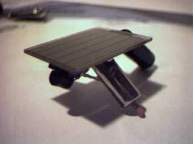
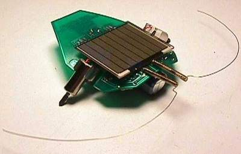
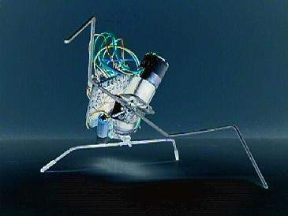
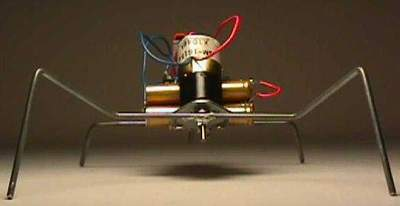
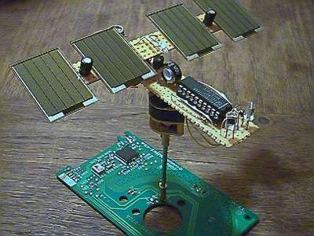

BEAM is an acronym for Biology, Electronics, Aesthetics and Mechanics. BEAM robots use simple analog circuits to create elegant autonomous behavior. These robots rely heavily on solar power, discrete components, and clever mechanical design. Listing a few here.
Solaroller
Solarollers are often the first BEAM project people build, because the behavior is expressive yet incredibly simple: collect light → store charge → burst forward. The charm lies in watching the robot "pulse" its way across a table.
Photovore
Photovores mimic biological tropisms — the way plants and insects orient toward stimuli. With nothing but two sensors and a simple nervous-net, they display behavior that feels surprisingly alive.

Walker
Walkers are where BEAM starts getting wonderfully weird — leg synchronization, mechanical compliance, and analog oscillators all interacting to create emergent gait.


Lighthead
Lightheads are elegant in their simplicity — they “gaze” at bright light, often creating a relaxing kinetic sculpture. Many BEAM enthusiasts build them purely as aesthetic pieces for their workspaces.

(Photo Credits: Photovore and walkers made by Chiu-Yuan Fang. Solaroller made by Ian Bernstein. Lighthead made by Frans Storms.)